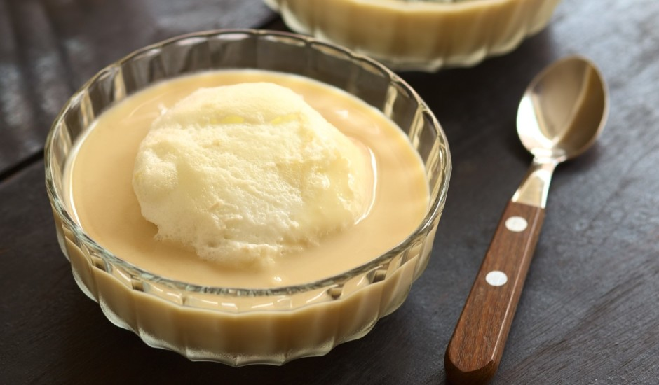
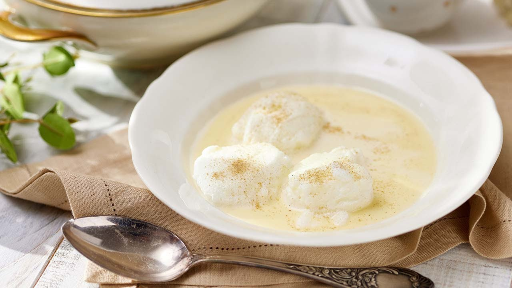
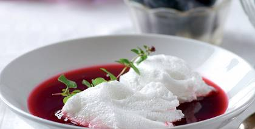
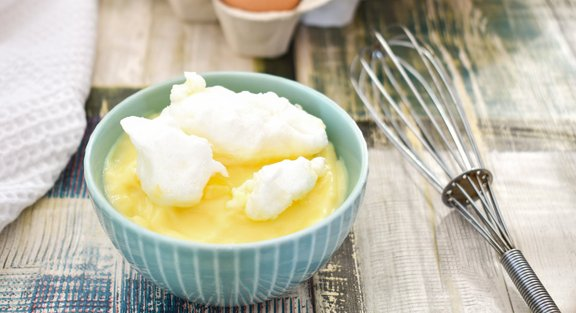

Recepte
Peldošās saliņas
Sastāvdaļas:
5 olas
0.5 l piena
1 ēd. k. vaniļas cukura
Cukurs pēc garšas
Pagatavošana:
Atdala olas baltumus no dzeltenumiem no baltumiem taisīsim "salas" no dzeltenumiem mērci.
Olas baltumiem pievieno cukuru. Olas dzeltenumiem pievieno vaniļas cukuru un cukuru.
Olas baltumu sakuļ stingrās putās un uzvāra pienu.
Kad piens uzvārījies, nogriež mazāku uguni un ar putu karoti pa gabaliem pienā liek olas baltumu putas.
Kamēr vārās piens un putas, olas dzeltenumu sakuļ, lai cukurs pakūst, lai maziņas gaišas putiņas pa virsu.
Pienā, kurā vārītas putas, pamazām, lēnām lej klāt olu dzeltenumu masu, to visu laiku maisot. Neļauj krēmam uzvārīties.
Visu atdzesē, trauciņā pilda krēmu un pa virsu liek "saliņas"
Lai labi garšo!!




Avots:https://receptes.tvnet.lv/recepte/17369-peldosas-salas